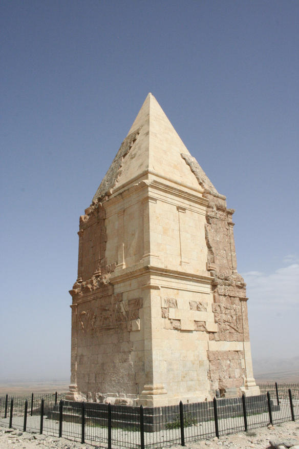
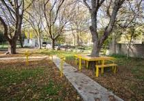
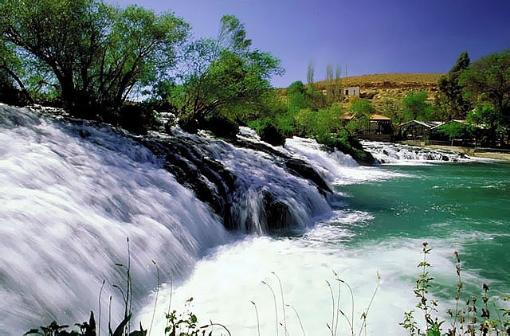

Hermel Citadel: Witness the grandeur of
this historic fortress, a testament to the region's rich
past. Ascend its ramparts and be rewarded with panoramic
vistas of the surrounding landscape.

Hermel Pyramid
Inclusive Public Park: Escape the urban
buzz and find tranquility amidst the verdant expanse of
As-Sahel Al-Aam Public Park. Perfect for picnics, family
outings, or simply relaxing amidst nature's embrace.

Hermel Inclusive park
Assi river: Hermel boasts a hidden gem
– the Assi River. This vital waterway winds its way
through the city, offering a refreshing escape and a
glimpse into the natural beauty of the region. Known for
its year-round water levels, the Assi River is a popular
spot for exciting adventures like white-water rafting.
Whether you're seeking an adrenaline rush or a peaceful
paddle, the Assi River adds another layer of adventure
to your exploration of Hermel.

Hermel Assi river